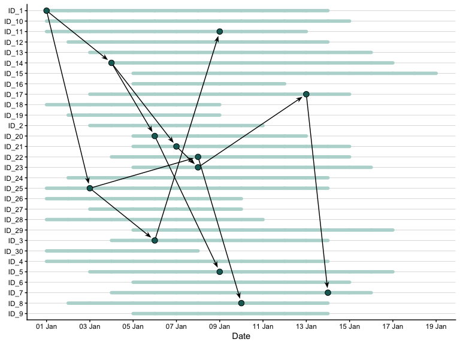

Simulate hospital outbreaks with changing patient populations, contact patterns, and interventions.
Create a daily population, simulate transmission, and visualise who infected whom.
Installation
Install the development version from GitHub:
# install.packages("pak")
pak::pak("CyGei/nososim")A first outbreak
Simulate an outbreak in a population of 30 people, starting with one infection. Containment strategy starts on day 10 reducing transmission hazards by 50%.
library(nososim)
library(ggplot2)
set.seed(123)
dates <- as.Date("2026-01-01") + 0:20
timeline <- make_timeline(n = 30, dates = dates, admission_delay = 0:4, R = 2)
imported <- data.frame(id = "ID_1", date = dates[1])
outbreak <- make_outbreak(
timeline,
imported,
w = dpois(0:10, 2),
dates = dates,
intervention = function(present, date) {
E_t <- matrix(
0,
nrow(present),
nrow(present),
dimnames = list(present$id, present$id)
)
if (date >= dates[10]) {
E_t[,] <- 0.5
}
E_t
}
)
autoplot(outbreak, aes(colour = I("#B8D8D3"), fill = I("#176B65")))
Go further
The getting started guide walks through ward transfers, staff schedules, mixing patterns, and masking. Browse the function reference for individual function arguments and examples.